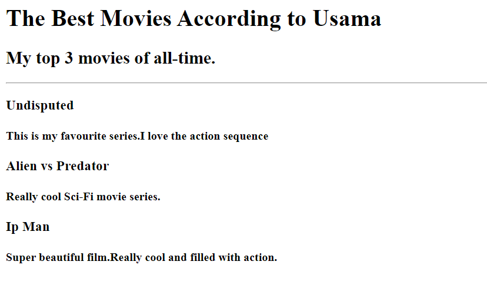

Summary
I am a highly motivated,hardworking,dedicated and driven individual with experience in Mechanical Maintenance and Instrumentation
Education
- Bachelor of Science in Mechatronics and Control Engineering - University of Engineering and Technology,Lahore (2016-2021)
- Intermediate in Pre-Engineering - Punjab Group of Colleges (2014-2016)
- Secondary School Certification - Beaconhouse School System (2014)
Work Experience
Electrical and Instrumentation Engineer
Hadi Engineering Services
(July 2021-August 2022)
- Worked as an Electrical and Instrumentation Engineer
- Worked on different projects involving the creation and testing of various electrical instruments
- Also worked on PLCs,PCBs and Arduino boards
Maintenance Officer
Precision Forging Private Limited
(June 2021-July 2021)
- Worked as Maintenance Officer ensuring Daily and Weekly maintenance of various machines
- Worked on different Forging Presses (500T, 700T, 1000T etc.)
Maintenance Trainee
Sabroso Processing Plant 10km-Faisalabad road,Sheikhupura
(May 2021-June 2021)
- Worked as a Maintenance Trainee in the Mechanical Maintenance department
- Helped the department in re-arrangement and renewal of official documents required for an upcoming Audit according to ISO 50001 standards
Internship
Atlas Honda Limited - Sheikhupura
(June 2019-July 2019)
- Worked under the Maintenance department in the Die-Casting plant
- Learnt basic info about the PLCs used in the machines and how to study Ladder Logic diagram to detect faults
- Proposed a solution for the project statement of Removal of Metallic dust from Shot Blast machine's exhaust
Internship
Atlas Honda Limited - Sheikhupura
(June 2018-July 2018)
- Worked under the Production department in the Engine Plant on the Crankshaft Automatic Line
- Gained valuable experience improving my problem-solving and loical thinking skills
- Designed and developed a model of Snap-Gauge for the internship project
Freelancing
(August 2020-June 2021)
(Sep 2021-Jan 2022)
- Worked on various projects using softwares like MATLAB (including Simulink),SolidWorks,MultiSim,Pspice and Arduino
- Did Report Writing for some clients including self-research
Skills
- SolidWorks
- Arduino
- C++
- MATLAB
- Pspice/MultiSim
Awards/Certifications
- HP for Life_IT for Business Certificate
- HP Life_Success Mindset Certificate
- (Udemy) Master the Art of Writing Fascinating Copy for Persuasion
- (Udemy) Project Management Fundamentals: A Beginner's Guide
- (Udemy) Master Course in Operational Risk Management (ORM)
- (Udemy) Master Course in Project Management 2.0
- Link for above certificates
Projects
- Made a Rain Sensor using Printed Circuit Board (PCB)
- Made a Power Supply from Scratch
- Made a Basic Gear Train
- Made a Line Following Robot (LFR) using Arduino
- Studied Muscle Activity using EMG sensors and made a subsequent report
- Made a Burglar Alarm using Hydraulic sensors and Actuators
- Made a Flow Simulation of Wind Turbine in SolidWorks
- Made an Intellingent Drawing Collaborative Robot (Co-Bot) as Final Year Project (FYP)
- Final Year Project Link

Hobbies
Contact Me